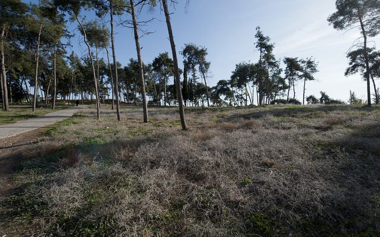
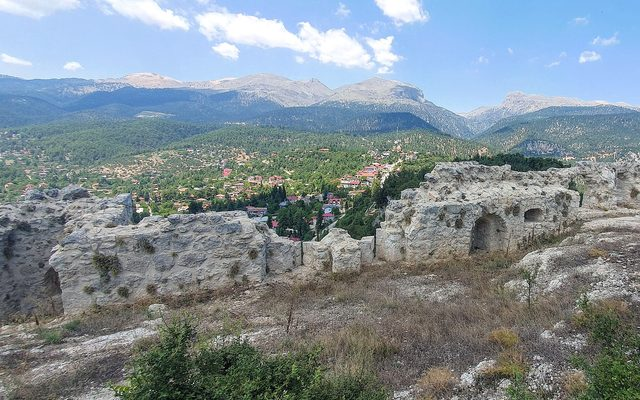

Inicio › Qué ver, provincia por provincia › Mersin
La guía Kültür Varlıkları reúne 44 lugares en Mersin: 23 yacimiento arqueológico, 10 museo, 7 castillo y edificio histórico, 2 edificio religioso, 2 espacio natural. A continuación encontrará lo más destacado, un mapa y la lista completa.
⭐ Lo más destacado

1 · Mersin · Yacimiento arqueológicoAdamkayalar
Grupo de relieves humanos de época romana tallados en los acantilados del cañón de Şeytan Deresi, entre Silifke y Erdemli.

2 · Mersin · Yacimiento arqueológicoAkkale
Complejo romano y bizantino junto al mar en Kumkuyu (Erdemli): una villa de dos pisos, termas, cisternas y almacenes, de fácil acceso desde la carretera costera.

3 · Mersin · Yacimiento arqueológicoYacimiento de Anemurio
Anemurio, en el cabo Anamur, el extremo más meridional de Anatolia, se extiende entre el mar y las montañas.
🗺 En el mapa
📍 Todos los lugares (44)
Yacimiento arqueológico (23)
AdamkayalarYacimiento arqueológicoAkkaleYacimiento arqueológicoYacimiento de AnemurioYacimiento arqueológico Elaiussa SebasteYacimiento arqueológico
Elaiussa SebasteYacimiento arqueológico GökkaleYacimiento arqueológico
GökkaleYacimiento arqueológico Yacimiento de KanlıdivaneYacimiento arqueológico
Yacimiento de KanlıdivaneYacimiento arqueológico Kanlıdivane (Kanytelis)Yacimiento arqueológico
Kanlıdivane (Kanytelis)Yacimiento arqueológico KarakabaklıYacimiento arqueológico
KarakabaklıYacimiento arqueológico Ciudad antigua de CelenderisYacimiento arqueológico
Ciudad antigua de CelenderisYacimiento arqueológico MezgitkaleYacimiento arqueológico
MezgitkaleYacimiento arqueológico Ciudad antigua de OlbaYacimiento arqueológico
Ciudad antigua de OlbaYacimiento arqueológico Yacimiento de Ayatekla (Silifke)Yacimiento arqueológico
Yacimiento de Ayatekla (Silifke)Yacimiento arqueológico Soli PompeyópolisYacimiento arqueológico
Soli PompeyópolisYacimiento arqueológico TapureliYacimiento arqueológico
TapureliYacimiento arqueológico Calzada romana de TarsoYacimiento arqueológico
Calzada romana de TarsoYacimiento arqueológico
Gözlükule de TarsoYacimiento arqueológico Puerta de Cleopatra y Calle Antigua de TarsoYacimiento arqueológico
Puerta de Cleopatra y Calle Antigua de TarsoYacimiento arqueológico Yacimiento de UzuncaburçYacimiento arqueológico
Yacimiento de UzuncaburçYacimiento arqueológico YanıkhanYacimiento arqueológico
YanıkhanYacimiento arqueológico Montículo de YumuktepeYacimiento arqueológico
Montículo de YumuktepeYacimiento arqueológico ÇatıörenYacimiento arqueológico
ÇatıörenYacimiento arqueológico ÖküzlüYacimiento arqueológico
ÖküzlüYacimiento arqueológico ÜçayaklıYacimiento arqueológico
ÜçayaklıYacimiento arqueológicoMuseo (10)
 Casa Museo de Atatürk en MersinMuseo
Casa Museo de Atatürk en MersinMuseo Museo de MersinMuseo
Museo de MersinMuseo Casa de Atatürk y Museo Etnográfico de SilifkeMuseo
Casa de Atatürk y Museo Etnográfico de SilifkeMuseo Museo de SilifkeMuseo
Museo de SilifkeMuseo Museo de los Mosaicos de Narlıkuyu (Silifke)Museo
Museo de los Mosaicos de Narlıkuyu (Silifke)Museo Museo Monumento de San Pablo (Tarso)Museo
Museo Monumento de San Pablo (Tarso)Museo Museo de Ánforas Arslan EyceMuseo
Museo de Ánforas Arslan EyceMuseo Casa de Atatürk en TaşucuMuseoMuseo de AnamurMuseoMuseo de TarsoMuseo
Casa de Atatürk en TaşucuMuseoMuseo de AnamurMuseoMuseo de TarsoMuseoCastillo y edificio histórico (7)
 Castillo de GözneCastillo y edificio histórico
Castillo de GözneCastillo y edificio histórico Córico y KızkalesiCastillo y edificio histórico
Córico y KızkalesiCastillo y edificio histórico Castillo de MamureCastillo y edificio histórico
Castillo de MamureCastillo y edificio histórico Castillo de la Doncella de Mersin (Kızkalesi)Castillo y edificio histórico
Castillo de la Doncella de Mersin (Kızkalesi)Castillo y edificio histórico
Castillo de Namrun (Lampron)Castillo y edificio histórico Castillo de SilifkeCastillo y edificio histórico
Castillo de SilifkeCastillo y edificio histórico Castillo de SoftaCastillo y edificio histórico
Castillo de SoftaCastillo y edificio histórico